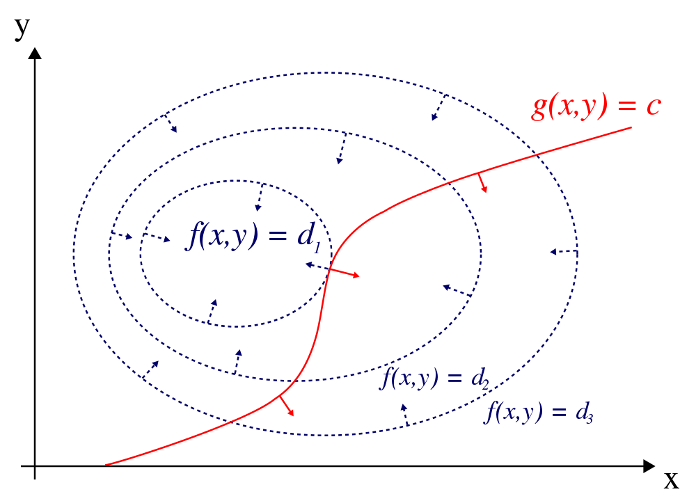

Table of Contents
- 1. General optimization
- 2. Optimal control
- 3. Physics
- 4. Reference
1 General optimization
1.1 Method of Lagrange Multipliers
- Theorem
\[ \min_x f(x) \] s.t. \[ g(x) = c \] where \(f(.) \in R\), \(x \in R^N\), \(g(x) \in R^M\), \(c \in R^M\) and \(M < N\).
One way is to substitute \(M\) optimization variables with the other \(N-M\) ones. We would then proceed in the usual way to find the stationary solution points of \(f\) by considering the partial derivative of \(f\) with respect to the remaining variables, setting those partial derivatives equal to zero, and then solving that system equations. But sometimes solving the constraint equations may be very difficult, and the method of Lagrange multiplier provides an elegant alternative.
The idea of the method of Lagrange multipliers is to convert the constrained optimization problem to an unconstrained one as follows. Form the [Lagrangian function (also called auxiliary function):
\[ \mathcal{L}(x,\lambda) = f(x) + \lambda^\top g(x) \]
where the parameter variables \(\lambda \in R^M\) are known as the Lagrange multipliers.
The local maxima or minima can be found where the partial derivatives of \(\mathcal{L}\) with respect to all of its dependent variables are zero:
\begin{eqnarray*} \nabla_{x} \mathcal{L} =& \nabla_x f(x) + \lambda^\top \nabla_x g(x)\\ \nabla_{\lambda} =& g(x) \end{eqnarray*}- Intuition:

Figure 1: The red line shows the constraint g(x, y) = c. The blue lines are contours of f(x, y). The point where the red line tangentially touches a blue contour is the maximum of f(x, y), since d1 > d2.
As shown above, the stationary points exist where the contour of \(f\) is parallel with that of \(g\) (or the gradients of these are parallel to each other).
Interpretation of the Lagrange multipliers
Notice that \[ \lambda = (\nabla_{c} \mathcal L)^\top \]The Lagrange multipliers are the change rate of the quantity being optimized as a function of constraint parameters. In Lagrange mechanics, the quantity being optimized is Action functional. If \(g(x) = c\) is the constrained trajectory, the Lagrange multipliers are Newton forces (we can feel the Lagrange multipliers when we try to stretch a spring!). In optimal control, the quantity begin optimized is a general Lagrangian, the constraints are the system dynamics, path constraints, and etc. The Lagrange multipliers are co-state, which is \(V_x\). We will talk more about this in the following sections.
1.2 Euler-Lagrange Equation
1.2.1 History background
The Euler-Lagrange equation was developed in the 1750s by Euler and Lagrange in connection with their studies of the tautochrone problem. This is the problem of determining a curve on which a weighted particle will fall to a fixed point in a fixed amount of time, independent of the starting point. Lagrange solved this problem in 1755 and sent the solution to Euler. The two further developed Lagrange's method and applied it to mechanics, which led to the formulation of Lagrangian mechanics. Their correspondence ultimately led to the calculus of variations, a term coined by Euler himself in 1766.
1.2.2 Theorem
In calculus of variations, the Euler-Lagrange equation, or Lagrange's equation, is a differential equation whose solutions are the functions for which a given functional is stationary. Because a differentiable functional is stationary at its local maxima and minima, the Euler-Lagrange equation is useful for solving optimization problems in which, given some functional, one seeks the function minimizing (or maximizing) it.
The Euler-Lagrange equation is an equation satisfied by a function \(q\) of a real argument t which is a stationary point of the functional:
\begin{equation} \label{eq:el-eqn-1} S(q) = \int_{a}^{b}L(t,q,\dot{q})dt \end{equation}The Euler-Lagrange equation, then, is the ordinary differential equation
\begin{equation} \label{eq:el-eqn-2} \frac{\partial L}{\partial q}-\frac{d}{dt}\frac{\partial L}{\partial \dot{q}} = 0 \end{equation}The solution of this Eq. \ref{eq:el-eqn-2} is the stationary solution of Eq. \ref{eq:el-eqn-1}.
1.2.3 Derivation
For \(q\) to be a stationary solution of Eq. \ref{eq:el-eqn-1}:
\begin{equation} \label{eq:11} \frac{\delta S}{\delta q} = 0 \end{equation} \begin{eqnarray*} \label{eq:33} \delta S(q(t)) &=& \int_{t_0}^{t_f} \{ \frac{\partial L}{\partial q}\delta q + \frac{\partial{L}}{\partial{\dot{q}}}\delta{\dot{q}} \} dt \\ &=& \frac{\partial{L}}{\partial{\dot{q}}}\delta{q}(t)\Big|^{t_f}_{t_0} + \int_{t_0}^{t_f} \Big(\frac{\partial{L}}{\partial{q}} - \frac{d}{dt}\frac{\partial{L}}{\partial{\dot{q}}}\Big)\delta{q} dt \end{eqnarray*}Major trick: \[ \frac{d}{dt} \{ \frac{\partial L}{\partial \dot{q}} \delta q \} = \frac{d}{dt} \{ \frac{\partial L}{\partial \dot{q}} \} \delta q + \frac{\partial L}{\partial \dot{q}} \delta \dot{q} \] Then we have: \[ \frac{\partial L}{\partial \dot{q}} \delta \dot{q} = \frac{d}{dt} \{ \frac{\partial L}{\partial \dot{q}} \delta q \} - \frac{d}{dt} \{ \frac{\partial L}{\partial \dot{q}} \} \delta q \]
The boundary conditions, \(\delta{q}(t_0) = 0\) and \(\delta{q}(t_f)=0\), causes the first term to vanish. Therefore, the stationary solution of Eq. \ref{eq:el-eqn-1} must satisfy: \[ \frac{\partial L}{\partial q}-\frac{d}{dt}\frac{\partial L}{\partial \dot{q}} = 0 \]
1.3 Hamilton-Jacobi equation
For a general optimization problem:
\begin{equation} \label{eq:gen-1} \min_{y(x)} L(y(x), y(x)', x) dx \end{equation}where \(L\) is the Lagrangian and \(y'\) is the derivative of \(y\) with respect to \(x\).
According to EL equation, the stationary solution of Eq. \ref{eq:gen-1} should satisfy: \[ \frac{d}{dx} (\nabla_{y'} L(y,y',x)) - \nabla_{y} L(y,y',x) = 0 \]
If we define the momentum as: \[ p := \nabla_{y'} L(y,y',x) \] and Hamiltonian as: \[ H:= p y' - L \]
Note: Hamiltonian method provides a way to find a constant quantity
Eq. \ref{eq:gen-1} can be re-written as:
\begin{equation} \label{eq:gen-2} p' = \nabla_y L = - \nabla_y H \end{equation}Therefore,
\begin{eqnarray*} p' &=& - \nabla_y H(y,y',p,x) \\ y' &=& \nabla_p H(y,y',p,x) \end{eqnarray*}where \[ p := \nabla_{y'} L(y,y',x) \] \[ H := py' - L(y,y',x) \]
Important poperty of the Hamiltonian: \[ H' = \nabla_{x} H + \nabla_{y} H y' + \nabla_{y'} H y'' + \nabla_p H p' \] Notice that \[ \nabla_{y'}Hy'' = (p - \nabla_{y'} L) y'' = 0 \]
We get: \[ H' = \nabla_x H = - l_x \]
If \(l\) doesn't depend on \(x\), then \(H\) is constant.
2 Optimal control
2.1 Bellman equation
2.1.1 Background
A Bellman equation, named after its discoverer, Richard Bellman, also known as a dynamic programming equation, is a necessary condition for optimality associated with the mathematical optimization method known as dynamic programming. It writes the value of a decision problem at a certain point in time in terms of the payoff from some initial choices and the value of the remaining decision problem that results from those initial choices. This breaks a dynamic optimization problem into simpler subproblems, as Bellman's 'Principle of Optimality' prescribes. The Bellman equation was first applied to engineering control theory and to other topics in applied mathematics, and subsequently became an important tool in economic theory. Almost any problem which can be solved using optimal control theory can also be solved by analyzing the appropriate Bellman equation. However, the term 'Bellman equation' usually refers to the dynamic programming equation associated with discrete-time optimization problems. In continuous-time optimization problems, the analogous equation is a partial differential equation which is usually called the Hamilton-Jacobi-Bellman equation (HJB).
2.1.2 Theoram
For the discrete-time optimal control problem: \[ J_k({x}_k) = \min_{{u}_k \in \cal{U}_k} \{ \phi(x_N) + \sum_{k=0}^{N-1} L_k({x}_k,{u}_k) \} \] s.t. \[ x_{k+1} = F(x_k, u_k, k) \]
Bellman equation says \(J_k(x_k)\), the optimal cost-to-go function, should satisfy:
\begin{equation} \label{eq:bellman} J_k(x_k) = \min_{{u}_k \in \cal{U}_k} \{ L_k(x_k, u_k) + J_{k+1}(x_{k+1}, u_{k+1}) \} \end{equation}2.2 Hamilton-Jacobi-Bellman equation (HJB)
2.2.1 Background
The Hamilton-Jacobi-Bellman (HJB) equation is a partial differential equation which is central to optimal control theory. The solution of the HJB equation is the value function, which gives the optimal cost-to-go for a given dynamical system with an associated cost function. The solution is open loop, but it also permits the solution of the closed loop problem. Classical variational problems, for example, the brachistochrone problem can be solved using this method. The HJB method can be generalized to stochastic systems as well.
The equation is a result of the theory of dynamic programming which was pioneered in the 1950s by Richard Bellman and coworkers. The corresponding discrete-time equation is usually referred to as the Bellman equation. In continuous time, the result can be seen as an extension of earlier work in classical physics on the Hamilton-Jacobi equation by William Rowan Hamilton and Carl Gustav Jacob Jacobi.
2.2.2 Theorem
For the continuous time optimal control problem: \[ V(\mathbf{x}, t) = \min_{\mathbf{u}} \{ \phi(x(T)) + \int_t^T l(\mathbf{x}(t),\mathbf{u}(t), t) dt \} \] s.t. \[ \dot{x} = f(x,u,t) \]
The HJB equation is a partial differential equation. It says \(V(x, t)\), the value function, should satisfy:
\begin{equation} \label{eq:HJB} \color{red}{ -\frac{\partial V(\mathbf{x},t)}{\partial t} = \min_{\mathbf{u}}\{l(\mathbf{x},\mathbf{u}, t) + V_{\mathbf{x}}f(\mathbf{x},\mathbf{u}, t)\} } \end{equation}with boundary condition: \[ \color{blue} V(x(T), T) = \phi(x(T), T) \]
Compare with the discrete time Bellman equation: \[ J_k(x_k) = \min_{{u}_k \in \mathcal{U}_k} \{ L_k(x_k, u_k) + J_{k+1}(x_{k+1}, u_{k+1}) \} \]
Note: \(V_t(x,t)\) in HJB equation is the gradient of \(V\) w.r.t time \(t\). It is different from \(\dot{V}\). The relation between these two are: \[ \dot{V}(x, t) = V_x \dot{x} + V_t \]
As we can see, if we can solve for \(V\) then we can find from it a close-form control policy \(u\) that achieves the minimum cost.
2.2.3 Derivation
Intuitively, HJB can be derived as follows:
If \(V(x(t),t)\) is the optimal cost-to-go function (also called the 'value function'), then by Richard Bellman's principle of optimality, going from time \(t\) to \(t + dt\), we have
\begin{equation*} V(\mathbf{x}(t),t) = \min_{\mathbf{u}} \{l(\mathbf{x}(t),\mathbf{u}(t),t) dt + V(\mathbf{x}(t+ dt),t + dt)\} \end{equation*}The Taylor expansion of the last term is:
\begin{equation*} V(\mathbf{x}(t+ dt),t+ dt) = V(\mathbf{x},t) + V_t dt + V_{\mathbf{x}}\dot{\mathbf{x}} dt + o( dt^2) \end{equation*}where \(o( dt^2)\) denotes the terms in the Taylor expansion of higher order than one. Then if we cancel \(V(\mathbf{x}(t),t)\) on both sides, divide by \(dt\), and take the limit as \(dt\) approaches zero, then we obtain the HJB equation \ref{eq:HJB}.
2.3 Pontryagin Maximum Principle
2.3.1 Theorem
\[ H(x,u,\lambda) := l(x,u) + f(x,u)^T\lambda \] where \(\lambda(t)\) is the gradient of the optimal cost-to-go function (called co-state), also denoted as \(V_x\).
continuous-time Pontryagin's maximum principle
if \(x(t)\), \(u(t)\), \(1 \le t \le T\) is the optimal state-control trajectory starting at \(x(0)\), then there exists a costate trajectory \(\lambda(t)\) with \(\lambda(T) = \phi_x(x(T))\) satisfying
\begin{eqnarray} \label{eq:6} \dot{x} &=& H_{\lambda}(x,u,\lambda) = f(x,u) \\ -\dot{\lambda} &=& H_x(x,u, \lambda) = l_x(x,u) + f_x(x,u)^T\lambda \\ \end{eqnarray}s.t.
\begin{eqnarray*} x(0) &=& x_0 \\ \lambda(T) &=& \phi_x(T) \end{eqnarray*}and \[ u = \arg \min_{u} H(x,u,\lambda) \]
Eq. \ref{eq:6} is often referred to as 'canonical equation'canonical equation'. As we can see there are boundary constraints on the initial state and the final co-state, therefore, we need to solve a two point BVP.
It shows that the optimal control \(\mathbf{u}^*\) is the value of \(\mathbf{u}\) that globally minimizes the Hamiltonian \(H(\mathbf{x},\mathbf{u},t,V_{\mathbf{x}})\), holding \(\mathbf{x}\), \(V_{\mathbf{x}}\), and \(t\) constant. It was formulated by the Russian mathematician Lev Semenovich Pontryagin and his students and known as Pontryagin's maximum principle.
One of the most effective way to solve HJB, which is a first-order nonlinear partial differential equation, is the method of characteristic. It amounts to find a field of extremals. We can use Euler-Lagrange Equations, which is ordinary differential equation (ODE), to solve a particular optimal path and its associate optimal function, thus get the field of extremals.
2.3.2 Connection to the HJB equation
Recall the HJB equation \ref{eq:HJB}: \[ V_{t}(\mathbf{x},t) + \min_{\mathbf{u}}\{V_{\mathbf{x}}^Tf(\mathbf{x},\mathbf{u}) + l(\mathbf{x},\mathbf{u})\} = 0 \]
if the optimal control law is \(\pi(x,t)\), we can set \(u=\pi\) and drop 'min': \[ 0 = v_t(x,t) + l(x, \pi) + f(x, \pi)^T V_x(x,t) \] Now differentiate w.r.t \(x\) and suppress the dependences for clarity 1: \[ 0 = V_{tx} + l_x + l_u u_x + (f_x^T + f_u^T u_x^T) V_x + V_{xx} f \]
Using the identify \[ \dot{V}_x = V_{tx} + V_{xx}f \] and regrouping yields: \[ 0 = \dot{V}_x + (l_x + f_x^T V_x) + u_x^T(l_u + f_u^T V_x) = \dot{V}_x + H_x + u_x^T H_u \]
When u is the optimal we have \(H_u = 0\), thus \[ - \dot{\lambda} = H_x(x,u,t) \] where \(\lambda := V_x\).
2.3.3 Derivation using the method of Lagrange Multipliers
\[ \min \int_0^T l(x,u,t) dt \] s.t. \[ \dot{x} = f(x,u,t) \]
Let's convert the constrained optimization to unconstrained optimization using Method of Lagrange Multipliers method: \[ \min \int_0^T l(x,u,t) + \lambda^T (f(x,u,t) - \dot{x}) \] Let's define the Lagrange as: \[ L := l(x,u,t) + \lambda^T (f(x,u,t) - \dot{x}) \]
To extreme the functional, it should satisfies Euler-Lagrange Equation: \[ \frac{d}{dt} \nabla_{\dot{x}} L - \nabla_x L = 0 \] \[ \frac{d}{dt} \nabla_{\dot{\lambda}} L - \nabla_{\lambda} L = 0 \] \[ \frac{d}{dt} \nabla_{\dot{u}} L - \nabla_u L = 0 \]
Therefore we have: \[ \dot{\lambda} = - \nabla_x L \] \[ \dot{x} = f(x,u,t) \] \[ \nabla_u l + \lambda^T \nabla_u f(x,u,t) \]
Let's see how to find the same Hamiltonian by a general method: First, let's define a momentum: \[ p := \nabla_{\dot{x}} L = - \lambda \] then Hamiltonian is: \[ H := p\dot{x} - L = -l - \lambda^T f(x,u,t) \]
We have a different sign here, but if we choose \(\lambda\) as the momentum, we will have the same Hamiltonian.
2.3.4 Discussion
- The maximum principle provides an efficient way to evaluate the gradient of the total cost w.r.t. the control, which can be used to find optima numerically: \[ \nabla_{u} J(t) = \nabla_{u} H(t) \]
2.4 the HJB vs. the maximum principle
For the HJB equation:
- Necessary and sufficient conditions
- A partial differential equation and the solutions are the value function and a feedback control policy
- Requires that the value function to be C^1 continuous and differentiable w.r.t. the sate and time, which is not always true. In fact, it is quite typical for problems with bounded controls and terminal cost to have nondifferentiable value functions. A viscosity solution provides more rigorous solution, which is beyond our scope.
- Starts from discrete time and extend to continuous time
- Its proof is relative easier
For the Maximum principle:
- Necessary conditions
- ODE equations and the solution is a particular trajectory
- Doesn't requires the value function to be differentiable
- Starts with continuous time, root in the calculus of variation
- Works even if the value function is not differentiable 2
When the value function is first differetialable w.r.t time and state, the HJB has the same conclusion with the maximum principle.
3 Physics
3.1 Introduction
I have introduced some cool things in optimization, In this section, I will introduce how we can apply the idea of optimization to solve the motion of mechanical systems. First, I will introduce the principle of least action, which is cited broadly. The principle of least action provides a philosophy idea to understand the movement of animals, plans, and mechanical systems.
Then I will introduce Lagrangian mechanics, by which we can solve the motion of a mechanical system without explicitly calculating the force and the path inch by inch. In simple cases, the Lagrangian is equal to the difference of the kinetic energy and the potential energy, K-V. For a conservative system, the action functional is equal to the two times of the total work, \(\int_0^T (K-V) dt = 2W\). The path a object will take always extremes the total 'work'.
I will then introduce Hamiltonian mechanics. We can convert Lagrangian expression into Hamiltonian expression. So essentially they are solving the same problem with different forms. Lagrangian mechanics solves a second order derivative equation, while Hamiltonian solves two first-order ODE. Hamiltonian provides a good way to find constant quantities in a system.
3.2 Action functional
In mathematics, and particularly in functional analysis and the calculus of variations, a functional is a function from a vector space into its underlying field of scalars. Commonly the vector space is a space of functions; thus the functional takes a function for its input argument, then it is sometimes considered a function of a function (a higher-order function).
Define \(\cal{F}\) to be a function space, a set of integral function \(q(t)\) on the time interval \([a,b]\). Then functional \(F\) is a mapping from this function space to the reals: \[ F: \cal{F} \rightarrow \cal{R} \]
A particular functional, called the action or action functional, given for the Newtonian mechanics of a single particle by: \[ S(q) = \int_a^b L(q, \dot{q}, t) dt \] where the Lagrangian, \(L(q, \dot{q}, t)\), is the difference between the kinetic energy \(T\) and potential energy \(V\), \[ L(q, \dot{q}, t) = T - V \]
The stationary solution of the action functional satisfies Euler-Lagrange Equation.
3.3 Principle of least action
3.3.1 Background
Credit for the formulation of the principle of least action is commonly given to Pierre Louis Maupertuis, who wrote about it in 1744 and 1746, although the true priority is less clear, as discussed below.
Maupertuis felt that "Nature is thrifty in all its actions", and applied the principle broadly: The laws of movement and of rest deduced from this principle being precisely the same as those observed in nature, we can admire the application of it to all phenomena. The movement of animals, the vegetative growth of plants … are only its consequences; and the spectacle of the universe becomes so much the grander, so much more beautiful, the worthier of its Author, when one knows that a small number of laws, most wisely established, suffice for all movements.
Hamilton's principle is William Rowan Hamilton's formulation of the principle of stationary action. It states that the dynamics of a physical system is determined by a variational problem for a functional based on a single function, the Lagrangian, which contains all physical information concerning the system and the forces acting on it. The evolution \(q(t)\) of a system described by \(q(t) \in \mathbb{R}^N\) between \((t_1,q(t_1))\) and \((t_2,q(t_2))\) is an extremum of the action functional
\begin{equation} \label{eq:29} S(q):=\int_{t_1}^{t_2}L(t,q,\dot{q})dt \end{equation}where \(L(t,q,\dot{q}):= K-V\) is the Lagrangian function for the system.
A good tutorial can be found at:
3.4 Lagrangian mechanics
3.4.1 Background
Lagrangian mechanics is a re-formulation of classical mechanics that combines conservation of momentum with conservation of energy. It was introduced by Italian mathematician Joseph-Louis Lagrange in 1788. In Lagrangian mechanics, the trajectory of a system of particles is derived by solving the Lagrange equations in one of two forms:
- the Lagrange equations of the first kind, which treat constraints explicitly as extra equations, often using Method of Lagrange Multipliers; and
- the Lagrange equations of the second kind, which incorporate the constraints directly by judicious choice of generalized coordinates.
The fundamental lemma of the calculus of variations shows that solving the Lagrange equations is equivalent to finding the path for which the Action functional is stationary, a quantity that is the integral of the Lagrangian over time.
3.4.2 Theorem
Define the following scalar function (Action functional)
\begin{equation} \label{eq:lagrange} L=K(\dot{q})-V(q), \end{equation}where \(K\) is kinetic energy and is a function of only \(\dot{q}\), \(V\) is the potential energy and is a function of only \(q\), \(q\) is called generalized coordinate. Lagrange equations are often written as
\begin{equation} \label{eq:lagrange-eqn} \frac{d}{dt}\frac{\partial L}{\partial \dot{q}} - \frac{\partial L}{\partial q} = 0. \end{equation}
Intuitive example:
where \(v:=\dot{q}\) and \(h:=z\),the generalized coordinate is \(q:=(x,y,z)'\). The first term of \ref{eq:lagrange-eqn}
\begin{equation} \label{eq:24} \frac{d}{dt}\frac{\partial L}{\partial \dot{q}} = m\ddot{q}. \end{equation}The second term is
\begin{equation} \label{eq:27} \frac{\partial L}{\partial q} = (0,0,mg)' \end{equation}According to Newton's second law, \(m\ddot{q}-(0,0,mg) = 0\).
3.5 Hamiltonian mechanics
3.5.1 Background
Hamiltonian mechanics is a reformulation of classical mechanics that was introduced in 1833 by Irish mathematician William Rowan Hamilton. It arose from Lagrangian mechanics, a previous reformulation of classical mechanics introduced by Joseph Louis Lagrange in 1788, but can be formulated without recourse to Lagrangian mechanics using symplectic spaces (see Mathematical formalism, below). The Hamiltonian method differs from the Lagrangian method in that instead of expressing second-order differential constraints on an n-dimensional coordinate space (where n is the number of degrees of freedom of the system), it expresses first-order constraints on a 2n-dimensional phase space.
3.5.2 Theorem
In Hamiltonian mechanics, a classical physical system is described by a set of canonical coordinates \(r = (q, p)\), where each component of the coordinate \(q_i\), \(p_i\) is indexed to the frame of reference of the system. The time evolution of the system is uniquely defined by Hamilton's equations
\begin{eqnarray} \label{eq:hamilton-formula} \dot{p} &=& -\frac{\partial H}{\partial q} \\ \dot{q} &=& \frac{\partial H}{\partial p} \nonumber \end{eqnarray}where \(p(t)\) is generalized momenta, \(q(t)\) is generalized coordinates, \(H\) is the Hamiltonian function, which often corresponds to the total energy of the system. For a closed system, it is the sum of the kinetic and potential energy in the system. . It is simply the total energy of the material point.
Intuitive Example:
with the variable defined as:
- \(p = m\dot{q}\): the momentum of the material point
- \(q=(x,y,z)'\): the location of the material point
- \(V(q)\): the potential energy
Recall that \(F=\dot{p}=-\frac{\partial V}{\partial q}\), then Eq. \ref{eq:hamilton-formula} stands.
3.5.3 Link to Lagrangian mechanics
- Write out the Lagrangian \(L=T - V\). Express \(T\) and \(V\) as though you were going to use Lagrange's equation.
- Calculate the momenta by differentiating the Lagrangian with respect to velocity, as \(p=\frac{\partial{L}}{\partial{\dot{q}}}\)
- \(H=p\dot{q}-L\).
3.5.4 Link to Newtonian mechanics
Kinetic energy: \[ E_k = \frac{1}{2} m \dot{x}^2 = p^2 / (2m)\] where \(p = \dot{x} m\) is the momentum.
Potential energy: \[ E_p = V(x) \]
the action functional: \[ \int (E_k - E_p) dt \] where \[ L = \frac{1}{2m} p^2 - V(x) \] define: \[ H := p\dot{x} - L = m \dot{x}^2 - L = \frac{1}{2m} p^2 + V(x) \] We have: \[ - \dot{p} = \nabla_{x} H = \nabla_x V \] (which is the Newton's second law) and \[ \dot{x} = \nabla_{p} H = p/m \]
3.6 Newton's force and Lagrange multiplier
According to the Newton's second law: \[ F = m a \] Force can be measured by the accelerate of a object with a mass of m.
However, if we don't know the Newton's second law, can we study the force from an optimization perspective?
According to the principle of least action, the motion of a mechanical system satisfies: \[ \min \int_{0}^{T} L(x, x', t) dt \] It can be solved by Euler Lagrange equation or Hamiltonian equation.
Image that we are pushing a object and we can measure the motion of our hand, we want to know the contact force between our hand and the object. To solve the motion of the object, we need to solve the following equations: \[ \min \int_{0}^{T} L(x, x', t) dt \] s.t. \[ h(x,t) = 0 \] where the constraint is the motion of the hand.
We can convert the above constrained optimization problem to unconstrained optimization by using Method of Lagrange Multipliers as: \[ \min \int_{0}^{T} [L(x, x', t) + \lambda^T h(x,t) ] dt \]
Let's define the Lagrange \(L' := L + \lambda^T h(x,t)\), according to EL equation: \[ \frac{d}{dt} \nabla_{x'} L' - \nabla_{x} L' = 0 \] we have: \[ \frac{d}{dt} \nabla_{x'} L = \nabla_x L + \lambda^T \nabla_x h \] As we know, in Newtonian Mechanics, the change rate of momentum (on the left hand side) equals to the net force (on the right hand side). So we know that: \[ F = \nabla_x L + \lambda^T \nabla_x h \]
Recall that \(L = K - V\), where \(K\) is the kinetic energy and \(V\) is the potential energy, so the first term on the right hand side is the conservative force of the potential field and the second term is the contact force between the the object and the hand, where \(\nabla_x h\) is the Jacobian at the contact.
So we see that the contact force is the Lagrange multipliers.
4 Reference
- Calculus of Variations and Optimal Control Theory, A Concise Introduction http://liberzon.csl.illinois.edu/teaching/cvoc/node1.html
Footnotes:
The assumption is V is differentiable w.r.t. time and state x, which is not always true.